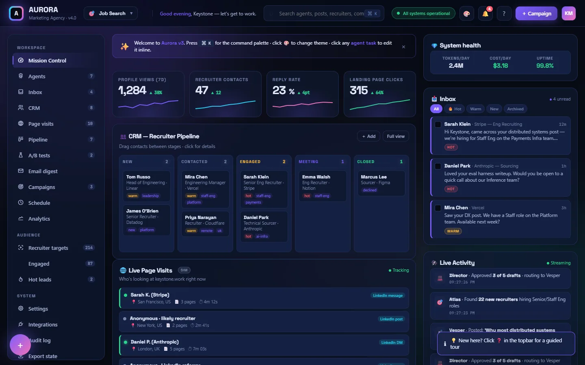
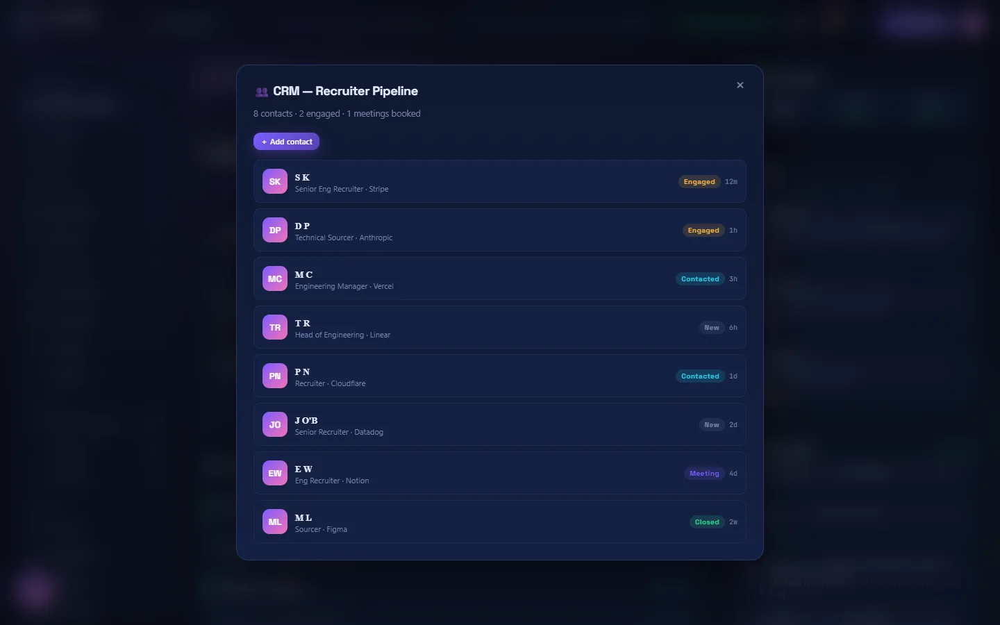
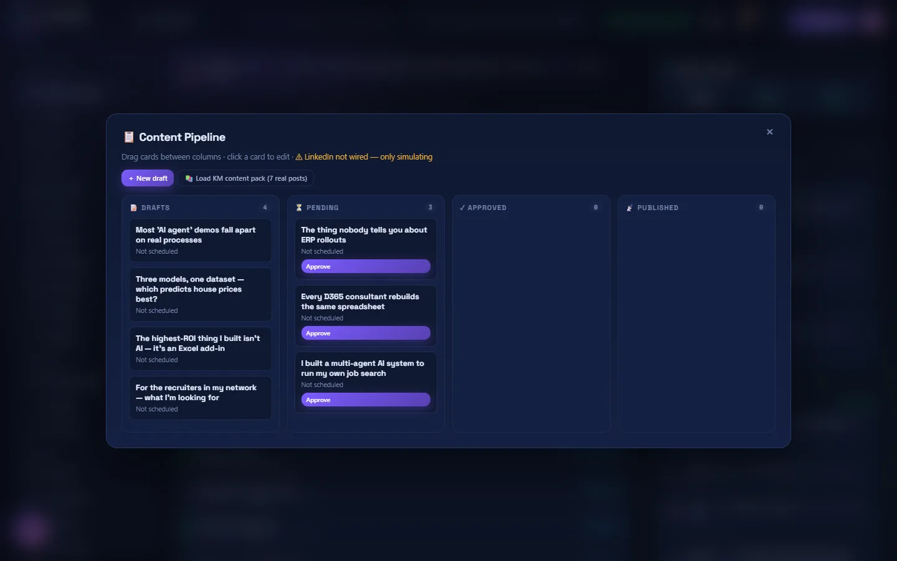
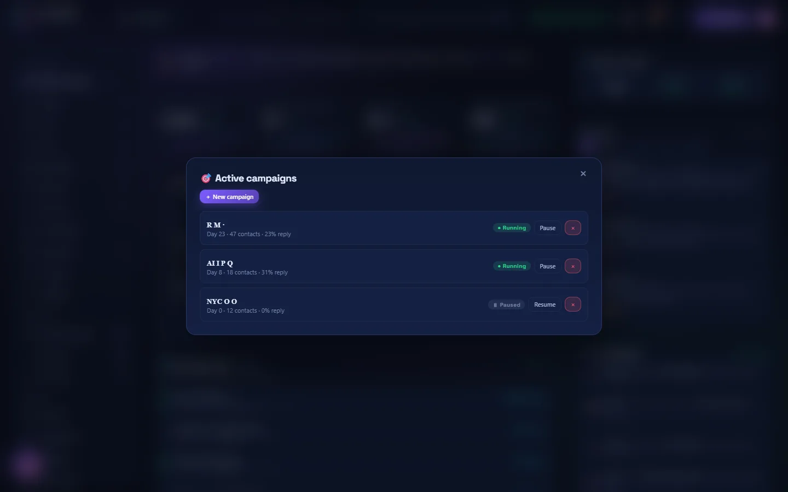

VANILLA JS / MULTI-AGENT
Aurora — Marketing Agency
A self-driving marketing agency: autonomous agents that plan campaigns, work a recruiter CRM, and track engagement, all from one Mission Control.

Why it exists
Personal-brand marketing means juggling content, outreach, CRM, and analytics by hand. Aurora runs a roster of autonomous agents — strategist, content, publisher, outreach, engagement, analytics — that take a brand goal and run the marketing motions for it: planning posts, working a recruiter CRM, sending personalized outreach, watching for replies. The whole thing lives in one single-file HTML dashboard with six themes and full localStorage persistence.

Recruiter CRM
What it shows: every recruiter contact tagged with stage (cold, engaged, conversation, offer) and the agent currently working it. The outreach agent sources contacts; the engagement agent tracks replies; the analytics agent reports conversion at each step.

Content pipeline
What it shows: kanban view of the content pipeline. Draft posts move through scheduling and publishing as agents pick them up. The strategist sets the cadence; the content agent drafts; the publisher pushes to the right channel at the right time.

Campaigns
What it shows: active campaigns, each with a goal, channel mix, and live KPIs. Status pills indicate which agents are running, paused, or waiting on input. Pause a campaign and every assigned agent stops automatically.